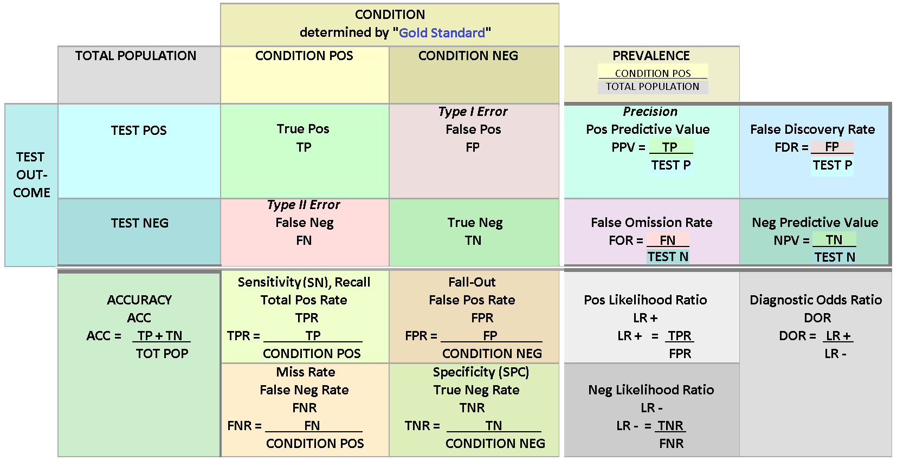
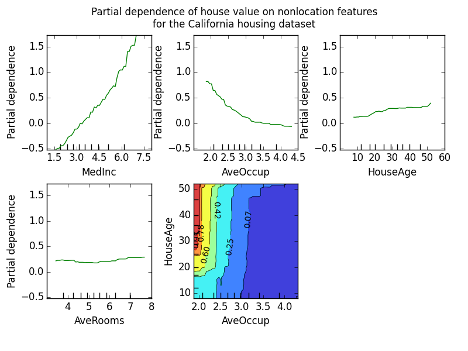
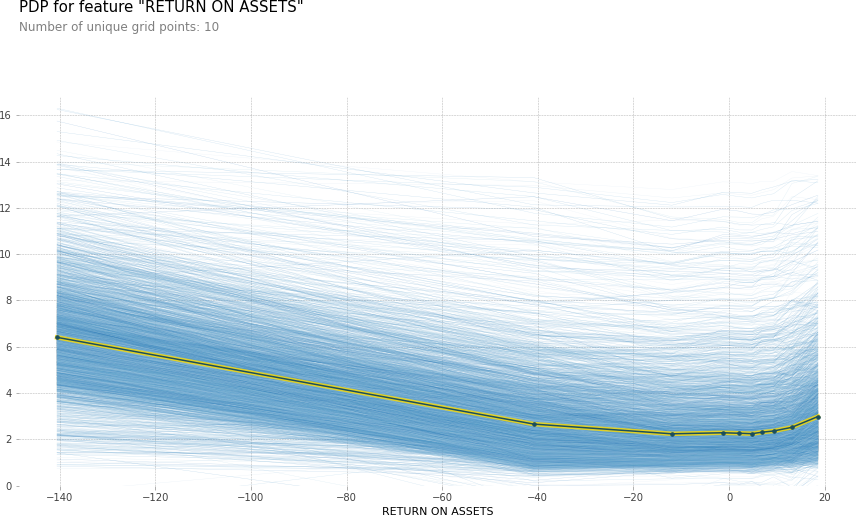
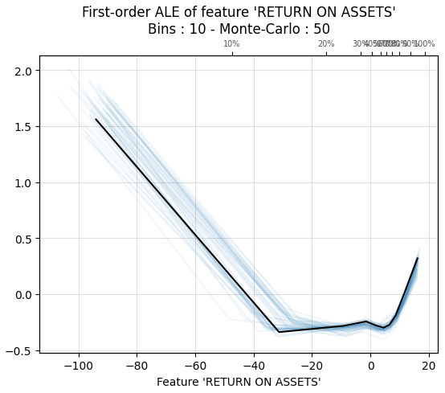
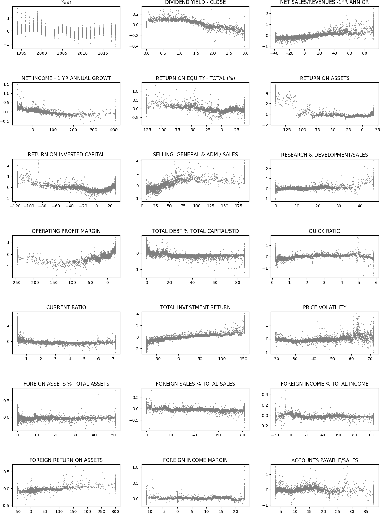
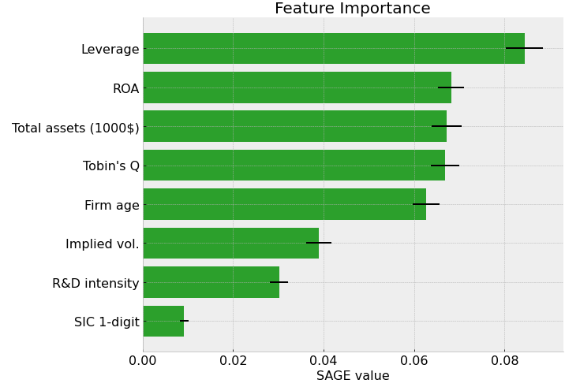

1. Introduction to decision making¶
Machine learning models excel at making predictions. However, when we use machine learning in decision making, very often interpretability is as important as good predictions. Therefore, research on interpretable machine learning has increased substantially in the last few years, and new methods for the interpretation is introduced almost weekly. To introduce everything would be impossible and therefore, I try to focus on the following to most popular methods that have established their place in the decision making process. Hopefully, this gives a reader knowledge in fundamentals of interpretable machine learning,
One could ask why we need interpretations? If our model state-of-the-art in prediction, why not just trust the model and forget what is the reason for such a prediction? First of all, even prediction performance can not be measured with a single metric. In the figure below, you see the collection of metrics that we can use to measure binary-classification performance. So, even the prediction performance of a model depends on the metric (interpretation) used.

But even if we could measure prediction performance reliably, the interpretation of a model is essential in many applications. Even if we could predict customer churn in our company accurately, we would probably like to know why they will churn. Or, if we are using an ML model in our bank to decide who gets a loan an who doesn’t, we are probably obliged to explain why our model, for example, rejected a loan application. Furthermore, in some applications understanding the behaviour of a machine learning model can help us learn more about the problem, the data and the reason why a model might fail. Of course, this is not the case always. For example, it is not vital for a company to understand how its’ product recommendation system works. It is enough that it works well and gives the customers recommendation that boosts sales. Furthermore, some methods are extensively studied and evaluated, and therefore, do not need extensive interpretation.
However, interpretation of machine learning models is vital in many applications and the subject of increasing research interest in the ML research community. The more ML is affecting our lives, the more important it is for us to understand its’ behaviour. As an example of good progress in the field, internet companies nowadays add an explanation to their product recommendations in the form of products often bought together -list.
In the following, I will go through the most common ML explanation methods. I will explain only the basic idea behind the method and avoid any math. In section 3.2, we will analyse some of these methods in more detail.
1.1. Plots¶
1.1.1. Partial dependence plot¶
The partial dependence plot (PDP) is a tool to analyse the marginal effect of one (or few) variables on the prediction. It is calculated by averaging out the effect of other variables. It shows us the functional form of the relationship between the target and a variable. So, initially, the PDP appears to be an excellent tool to analyse the effect of variables to the prediction. However, the assumption of independence is the main issue with PDP plots. The method assumes that the features of a model are not correlated. Because of this, the method also ignores interactions (between analysed and non-analysed variables).

1.1.2. Individual conditional expectations¶
Individual Conditional Expectation (ICE) plots basically display a PDP line for every instance. Thus, ICE plots show how a variable affects the prediction for every instance separately. A PDP is the average of the lines of an ICE plot. This solves the problem of interaction that PDP plots have. However, the independence assumption still holds and is also on an issue with ICE plots.

1.1.3. Accumulated local effects¶
Accumulated local effects plots are similar to PDP and ICE plots, i.e., they show how a feature affects the prediction on average. However, the main benefit of ALE plots is that they do not suffer about problems caused by the independence assumption. So, they are an unbiased alternative to PDP plots.

1.2. Local and global explanations¶
1.2.1. Permutation feature importance¶
The permutation feature importance is defined to be the increase in the prediction error when a single feature value is randomly shuffled, thus, breaking the relationship between the feature and the target. The increase of the prediction error is indicative of how much the model depends on the feature.
1.2.2. Global surrogate models¶
The idea of global surrogate models is very simple. We build an interpretable model that is trained to approximate a non-interpretable machine learning model. Then we analyse the ML model by examining this interpretable surrogate model. Basically, we are interpreting machine learning with machine learning.
1.2.3. Local surrogate models¶
Local surrogate models are very similar to global surrogate models. However, instead of a global surrogate, local surrogate models try to explain individual predictions. Currently, as far as the author knows, there is only one implementation of local surrogate models to Python, called Local Interpretable Model-agnostic Explanations (LIME).
1.2.4. Shapley additive explanations¶
SHapley Additive exPlanations (SHAP) is a method to explain individual predictions using the game-theoretically optimal Shapley Values. The methods give an estimate for every instance, how the model’s prediction depends on each feature. Basically, the prediction is split into parts, where each part represents the effect of one feature to the prediction. This allows us to draw, for example, scatter charts that can be used to infer the functional form of the dependence between a feature and the target. Furthermore, because SHAP is based on Shapley values, it also accounts complex interactions between the features.

1.2.5. Shapley additive global explanations¶
Initially, the SHAP values were considered to be efficient methods for global explanations also. However, because the SHAP values are contributions of each feature to the prediction, it is difficult to construct a reliable aggregate metric, for example, to feature importance. This is solved in Shapley Additive Global importancE (SAGE). Instead of estimating the contribution of features to the prediction, the SAGE values estimate the contribution of each feature to the decrease of the loss function. Therefore, for example, an average of individual explanations would be a reliable estimate of feature importance. Like SHAP, SAGE also accounts for complex feature interactions, because it is based on Shapley values.
